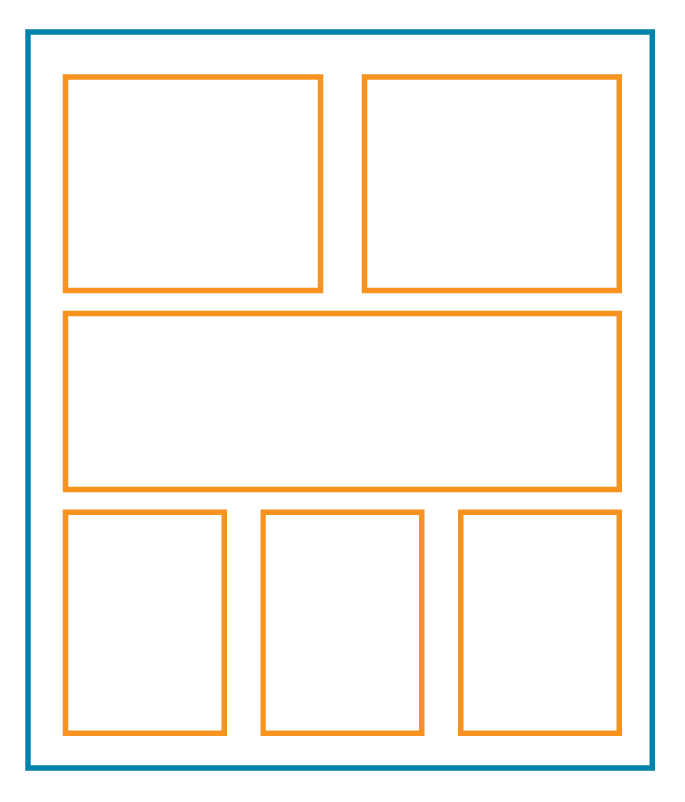

Website Layout
Using Cascading Style Sheets
Changing Box Behavior - Display Property
Eack box has a default behavior - block or inline -that can be changed with the display property.
This is one block element
This is another block element
This is another block element This is an inline element inside a block element and this is another inline element
This is a block element acting line an inline-block
This is another block element acting line an inline-block
- Block: Displays each element in its own line.
- Inline: Displays the element beside the previous one. Custom height and width will be lost.
- inline-block: Makes a box element inline, retaining it's block element properties.
- display: block; / display: inline; / display: inline-block;
Floats
Float is a positioning property that allows one element to wrap around another.
- Mostly used to display images inside content.
- Previously used to make full page layouts.
- Floated elements remain a part of the flow of the page.
- Left: Floats element to the left.
- Right: Floats element to the right.
- None: It is the element's default.
- To clear the floats use clear: none, left or right.

A little bit of History..
- Normal HTML Flow.
- Tables.
- Positioning - Floats.
- Flexbox. Aligns elements in a single axis, either rows or columns (2015).
- Grid. Works in two dimensios. Rows and columns at the same time. (2017)
- Multicolumn (working draft as of 03/2019).
https://www.researchgate.net/figure/Example-of-a-main-webpage-layout-in-Blackmon-et-al-2002-2003-2005_fig2_235208267


The Grid
- It's the latest and most powerful CSS layout system available.
- With the grid you can control the size and position of the "boxes" and their contents in the page.
- You can alter the visual display of the elements without affecting the semantic markup.
- You can specify the number of rows and columns.
- It's fast to develop.
- reduced code size
- Most common grid size is 12 because is easily divided by 2, 3, 4, 6
How does the grid work?
- Column and Row count are applied to the parent container to define the structure of the grid.
- Placement properties are applied to the individual elements insode the grid.
You can practice grid placement with these games:
Grid Structure

The Parent Grid Container

- Grid Template Areas:
- You can name the containers and assign them to the grid however you want.
- grid-template-areas:
"header header header header"
"main main . sidebar"
"footer footer footer footer"; - A period . denotes an empty cell
- grid-column-gap:
- grid-row-gap:
- grid-gap: is used for column and rows
- gap: shorthand for column and rows
- align-items: start | end | center | stretch
- justify-items: start | end | center | stretch (items have to be smaller than the grid)
- align-content: start | end | center | stretch | space-around | space-between | space-evenly
- justify-content: start | end | center | stretch | space-around | space-between | space-evenly (items have to be smaller than the grid)
The Children Grid Containers
- grid-column-start:
- grid-column-end:
- grid-column: Shorthand for grid-column start and end (2/5)
- grid-row-start:
- grid-row-end:
- grid-row: Shorthand for grid-row start and end
- grid-area:You can name individual areas and position them on the parent container using grid-template-areas
- justify-self: start | end | center | stretch
- align-self: start | end | center | stretch
- place-self: Shorthand for justify and align self (not fully suported)
Grid Alignment
Justify

Align

A note on Browsers
- Each browser has its own rendering engine.
- They all interpret and render web pages slightly different.
- They also have their own styles for default values.
- Blink – Used in Google Chrome, and Opera browsers.
- WebKit – Used in Safari browsers.
- Gecko – Used in Mozilla Firefox browsers.
- Trident – Used in Internet Explorer browsers.
- EdgeHTML – Used in Edge browsers.